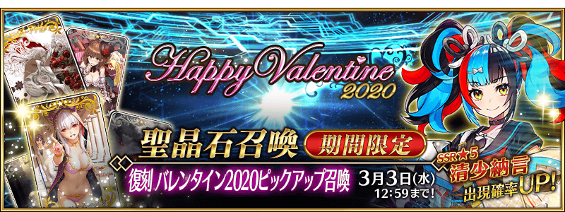
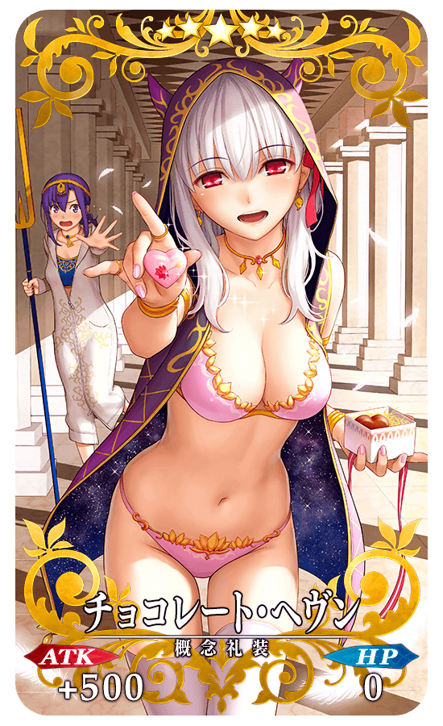
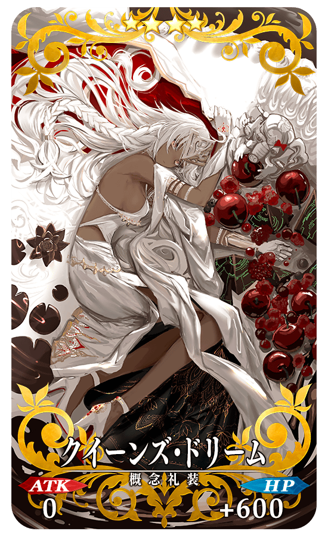
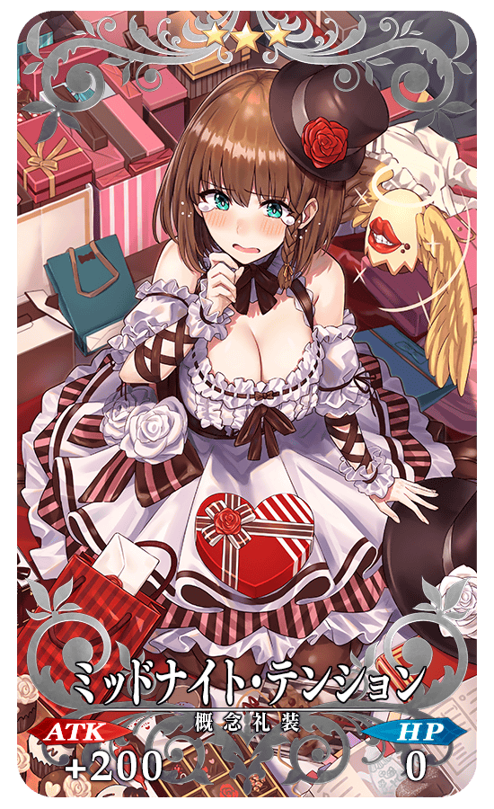
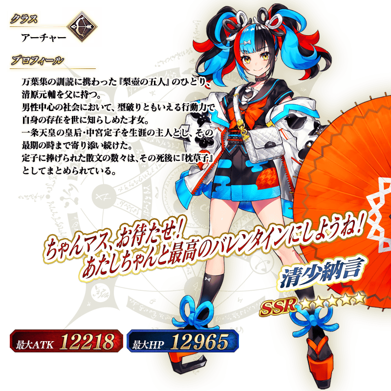

◆「復刻 情人節2020Pick Up召喚」期間◆
期間:2021年2月17日(三) 17:00～3月3日(三) 11:59
期間限定「復刻 情人節2020Pick Up召喚」舉辦！
變更在2020年舉辦的「情人節2020Pick Up召喚(每日交替)」一部份內容進行復刻。
期間限定「復刻 情人節2020Pick Up召喚」中，只限女性從者做為抽出對象。
並且，下述的1位期間限定從者Pick Up！
▼期間限定從者
・★5(SSR)清少納言
另外，2020年的期間限定「情人節2020Pick Up召喚(每日交替)」中登場的下述期間限定概念禮裝Pick Up！
・★5(SSR)チョコレート・ヘヴン
・★4(SR)クイーンズ・ドリーム
・★3(R)ミッドナイト・テンション
Pick Up期間中，Pick Up對象從者與概念禮裝的出現機率提升！
詳情請在聖晶石召喚畫面左下的召喚詳細確認。
11次召喚中確定1張★4(SR)以上和確定1位★3(R)以上的從者！ ※確定★4(SR)以上包含從者和概念禮裝。
◆有關從者的注意◆
※下述的從者在Pick Up期間結束後不會追加到故事召喚。
・★5(SSR)清少納言
※除了性別「女性」的從者外，下述的從者也包含在抽出對象。
・★5(SSR)狄奧斯庫洛伊
・★5(SSR)恩奇杜
・★4(SR)夏爾・德翁
・★4(SR)阿斯托爾福(Rider)
◆有關概念禮裝的注意◆
※請注意會做為抽出對象的期間限定概念禮裝只限下述的概念禮裝，其他的期間限定概念禮裝為抽出對象外。
・★5(SSR)チョコレート・ヘヴン
・★4(SR)クイーンズ・ドリーム
・★3(R)ミッドナイト・テンション
※請注意下述的概念禮裝在期間限定活動「愛的傳教士埃莫醬的聖瓦倫蒂諾！ ～迦勒底・苦澀・情人節2021～」中不會有活動道具掉落獲得數提升的效果。
・★5(SSR)チョコレート・ヘヴン
・★4(SR)クイーンズ・ドリーム
・★3(R)ミッドナイト・テンション
※下述的概念禮裝，Pick Up期間中也能靠友情點數召喚獲得。
・★3(R)ミッドナイト・テンション
※在自動變還設定登錄★3(R)概念禮裝的情況，下述的概念禮裝會變成自動變還的對象。
・★3(R)ミッドナイト・テンション

|  |
★★★★★SSR |
|  |
★★★★SR |
|  |
★★★R |

介紹「★5(SSR)清少納言」的寶具演出！
在「Fate/Grand Order」官方網站內的公告中，以影片公開寶具演出，敬請確認。
其他還有，
・愛的傳教士埃莫醬的聖瓦倫蒂諾！ ～迦勒底・苦澀・情人節2021～
・情人節2021Pick Up召喚(每日交替)
以期間限定舉辦中！
關於詳情，請自下述橫幅確認。
■「愛的傳教士埃莫醬的聖瓦倫蒂諾！ ～迦勒底・苦澀・情人節2021～」詳細情報

■「情人節2021Pick Up召喚(每日交替)」詳細情報